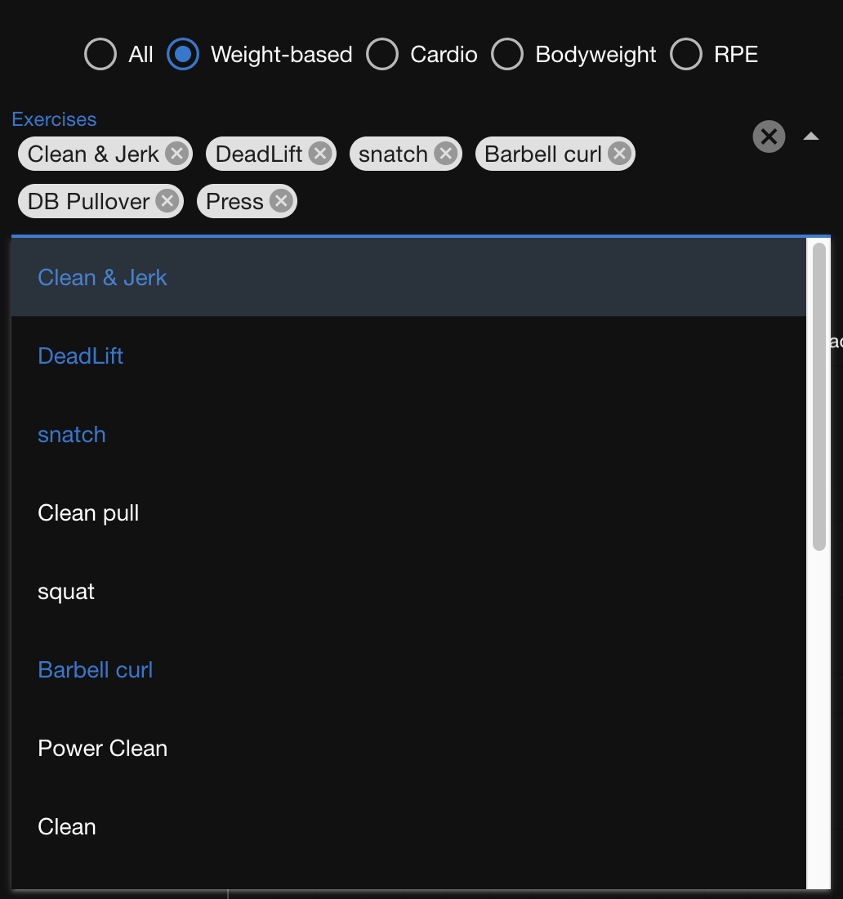

Analyze Your Performance
Once you have logged workouts and daily health markers, the data is plotted in three charts so that you can spot trends. To see the charts, on the menu bar click Analyze.
Analyze Exercise Volume
The Exercise Volume chart shows the total work that you've performed for one or more exercises each day. Load and Volume are plotted against time.
This chart shows a general upward trend over time, as well as significant fluctuations from workout to workout.
The type of volume that is defined for an exercise determines how it is aggregated:
- Counts: total number of reps
- Times: total number of hours
- Distances: total number of kilometers
Load is the intensity multiplied by the volume. The intensity values used in these calculations are as follows:
- Weight: the weight
- Bodyweight: one
- RPE: the RPE number
- Heart rate zones: the zone number
- Pace: the number of seconds
Comparing the load and volume values provides insight into the type of workout that was performed:
- A high load and a low volume indicates high intensity.
- A high load and a high volume indicate a lot of work at lower intensity.
Filter the volume chart
The default view of the Volume Chart includes the total volume for every exercise that you have performed. Use the filter to narrow your focus on a subset of exercises.
You can either use one of the provided filters that define subsets based on the type of intensity or select the exercises one by one. The following filters are provided:
- Weight-based: All exercises based on weight
- Cardio: All exercises that use heart rate zones, distance, and pace
- Bodyweight: All bodyweight exercises
- RPE: All RPE-based exercises
To filter the exercises:
- Above the Exercise Volume chart, click Exercise Filters to reveal the filters.
By default, all exercises are in the filter as can be seen by the tags that appear.
- Select a filter group.
Only the exercises in the group are filtered.
- To remove exercises individually, click the X on the tag.
- To add an exercise, expand the dropdown and select the exercise.
Already-included exercises appear blue, otherwise white.
 - To remove all exercise tags, click the X icon on the right.
Smooth the volume curve
The chart of daily load and volume values can appears choppy such that a long-term trend is difficult to see. In this case, try charting values that are aggregated over a longer time period. For example, using a 7-day aggregate size plots the loads and volumes that are accumulated over 7 days. Compared to the volume chart at the top of this page, the upward trend in the following chart is easier to recognize.

Aggregate sizes of 1, 7, 14, and 28 days are supported.
- To change the aggregate size, select the size from the Aggregate Size (days) drop-down.
Health Markers chart
Use the health markers chart to see trends in your general state of well being.
Blood Glucose chart
This chart shows you the time that you've worked out, eaten, and measured blood glucose and blood pressure.
Use the chart to evaluate the effects of your activities on your blood glucose.